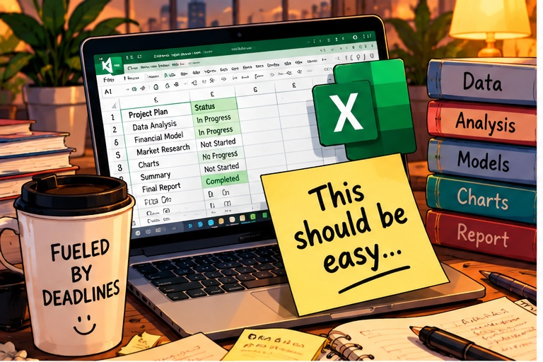
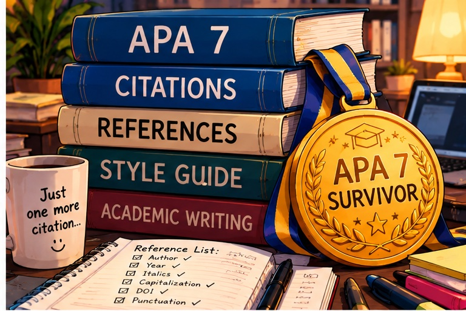

"They said after the storm comes the calm. It took me two semesters to get there."
When MS in AI came along… Calm: canceled.
THE JOURNEY SO FAR
Education & Experience
Education
MS in Artificial Intelligence
In Progress
MBA
Completed
MBA — Round Two
In Progress
Experience
Graduate Student
Professional experience meets student life.
AI Newcomer
Learning fast. Asking a lot of questions.
Feedback
NOw is a great Page, but still mising pictures
Mariia you forgot crikable files!!!
but do not make another headake
I like the clean and simple look of the portfolio. The personal quote gives it a nice touch, and the layout is easy to follow. I think adding more details about the projects and experience would make the portfolio more complete and show her work better.
Hi Mariia, I like your page, maybe you can put more colors in your page to looks great!
you Need to upload images and complette data in the projects!!
let me know if you need help
add some pictures and symbols
This page is a simple static page with no server behind it, so there's no way for it to save a new comment automatically.
Want to leave feedback? Message me directly — see The Late-Night Commit Log link for my GitHub, or reach me through our class chat.
<<<<<<< agent/pass-education-order

WELCOME BACK, EXCEL. APPARENTLY.
One spreadsheet became three. Three became twelve. Somewhere along the way, this started feeling suspiciously familiar.
Career flashback detected
Excel filesMultiplying
TabsOut of control
DeadlineApproaching
Delegation optionNot part of the assignment
CoffeeOperational
Then came the phrase…
"This should be easy."
First timeOh, great.
Several hours laterInteresting definition of "easy."
Early warning system
Phrase detected"This should be easy."
TranslationClear your evening.
Recommended actionOpen Excel.
Probability of finishing earlyStatistically insignificant.
Trust in the word "easy"Permanently recalibrated.
A few assignments later…
BeforeAssignment arrives → WHAT?!
AfterAssignment arrives → Okay. Open Excel.
SAME CHAOS. BETTER OPERATING SYSTEM.
Excel Black Belt — Reactivated
Apparently, muscle memory also applies to spreadsheets.
The word "easy" remains under review.

THE APA 7 MEDAL OF SURVIVAL
New country. New university. New academic rules. And apparently, punctuation now has consequences.
It started with…
"It's just a citation."
Author
↓
Year
↓
Italics
↓
Capitalization
↓
DOI
↓
References
↓
Punctuation
At some point, punctuation became an academic discipline.
And then I found this in Word…
REFERENCES → INSERT CITATION → ADD NEW SOURCE
WAIT. WORD COULD DO THIS THE WHOLE TIME?!
Insert citations ✓
Remember sources ✓
Build bibliography ✓
This information would have been extremely useful several assignments earlier.
APA 7 Survivor
International Student Division Specialization: Citation Engineering
This medal was not given. It was earned. Practically suffered into existence.
2026 Update
Now AI can help with this. Timing is everything.
THE MBA LEARNING CURVE
Semester 1 — What is happening?
Assignment arrives
↓
Read everything
↓
Open 14 tabs
↓
Read again
↓
Start working
↓
Discover another requirement
↓
Question life choices
↓
Finish
↓
Check
↓
Check again
↓
Submit
Stress10/10
Sleep2/10
Confidence2/10
Everything was new. Everything took forever.
Semester 2 — Okay. I see how this works.
Assignment arrives
↓
Read
↓
Figure out what they actually want
↓
Plan
↓
Do
↓
Check
↓
Submit
Stress6/10
Sleep5/10
Confidence7/10
Deadline survival system: Operational ✓
SAME CHAOS. BETTER OPERATING SYSTEM.
Finally, things were getting easier. A normal person might have enjoyed this. I chose AI.
SO… APPARENTLY WE'RE DOING THIS AGAIN.
Just when I thought I had a functioning system… new level unlocked.
Current status
Sleep↓↓↓
Stress↑↑↑
Things I still need to learnMultiplying
CuriosityOFF THE CHARTS
STUDY GROUP CHAT ARCHIVE: THE 3 AM DECISION
2:41 AMSo… which scenario are we choosing?
2:42 AMRESTRICT. Definitely restrict.
2:44 AMSUSPEND. I'm not changing my answer.
2:46 AMCONTINUE. Guys, continue makes the most sense.
2:49 AMCan we please agree on one?
2:52 AMRestrict.
2:53 AMSuspend.
2:53 AMContinue.
3:01 AMWe have been discussing this for two hours.
3:02 AMSo what did we decide?
3:03 AMNothing.
3:04 AMAre we at least agreed that it's time to go to sleep?
3:04 AMYES.
GROUP CONSENSUS ACHIEVED ✓
Decision: Go to sleep.
Restrict1
Suspend1
Continue1
Go to sleepUNANIMOUS
MBA teamwork: sometimes the only decision everyone can agree on is to stop making decisions.